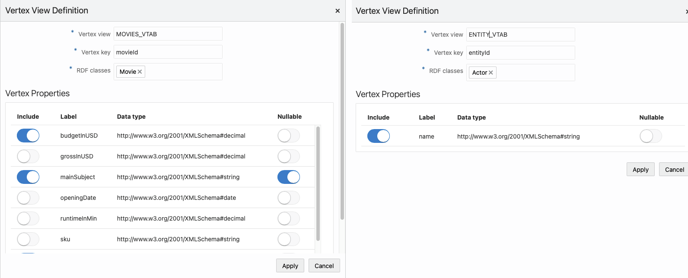

14.3.2.12.2 Creating a Vertex View
Perform the following steps to create a vertex view:
- Click Add in the Vertex Views
panel shown in the following figure:
- Configure the Vertex View Definition.Provide the following parameter values to define the vertex view:
- Vertex view: Name of the vertex view. This will be used for querying the vertex.
- Vertex key: Vertex key attribute.
- RDF classes: One or more RDF
classes. When RDF classes are added, the application retrieves the
available properties for the class and lists them in the dialog. You can
choose the properties to be added to the view. The Vertex
Properties table has the following columns:
- Include: At least one property must be included
- Label: Property label
- Data type: Displays the property data type
- Nullable: At least one
FALSEproperty must be includedTRUE: Vertices withNULL(missing) values for the property will be included.FALSE: Vertices withNULL(missing) values for the property will be excluded.
The following figure shows two examples of vertex view definitions (
movieandactorentities):Figure 14-69 Vertex View Definitions

Description of "Figure 14-69 Vertex View Definitions"
Parent topic: Database Views from RDF Models